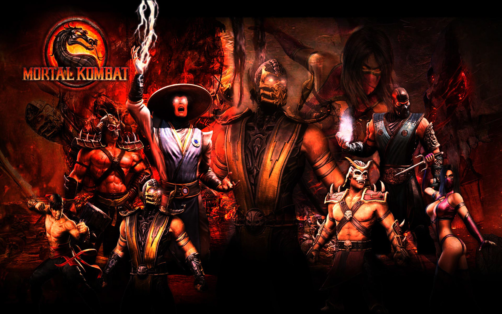
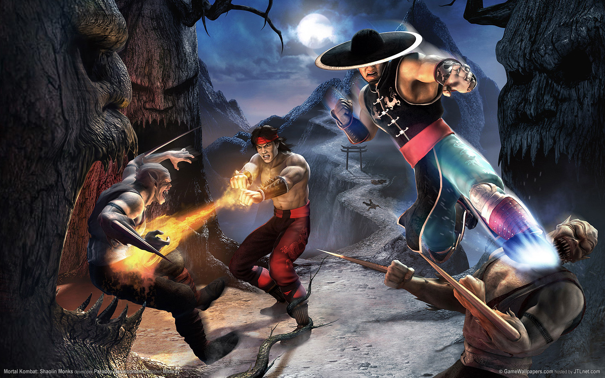

Win The Vim Combat
Vim Combat:
Using Vim is like a fight with some monster from mortal combat game and all it takes to survive/play it is to have good command base on keys to punch, block, kick, side kick, flying kick. . . and much more (at least 100+ commands) to win the beast.
Vim Commands:
Here is some of the Kung fu Karate command base to have a fight:- vim filename/monster name : to open a file/fight with a monster.
- h, l, k, j : move left, right, up, down (to fight, you have to move).
- Chicken Out : Ok, let me tell you this first, to chicken out from fight, ESC key -> :q! (this will quit the fight)
- x : delete/punch a character at cursor.
- i : insert/put a character before cursor.
- a : insert/put a character after cursor.
- r : replace a character.
- A : append at end of line.
- dw : delete/punch a word at cursor.
- d$ : delete/kick the line. Replace it with spaces.
- dd : delete line without replacing it with spaces.
- 0 : start of line.
- G : jump to end of file/field.
- n G : jump to nth line.
- gg : jump to first line.
- e : jump to end of word.
- CNTL G : displays your location in file/field and file/fight status.
- ce : cut a word.
- c$ : cut a line.
- p : put deleted text after cursor.
- u : undo last action.
- U : undo all actions on the current line.
- /phrase : search phrase forward.
- f phrase : search phrase forward.
- ? phrase : search phrase backward.
- n : continue search in same direction.
- N : continue search in same direction.
- :set hls : highlight search phrase.
- :set nohls: to turn off highlighting.
- % : get matching pair for (, [ or {.
- o : open a line below cursor.
- O : open a line above cursor.
- y : copy text.
- p : paste text.
- :q : close help window.
- :help or F1 key : open help window incase you are losing.
With this, you are good to have a fight. Enjoy!

Tweet